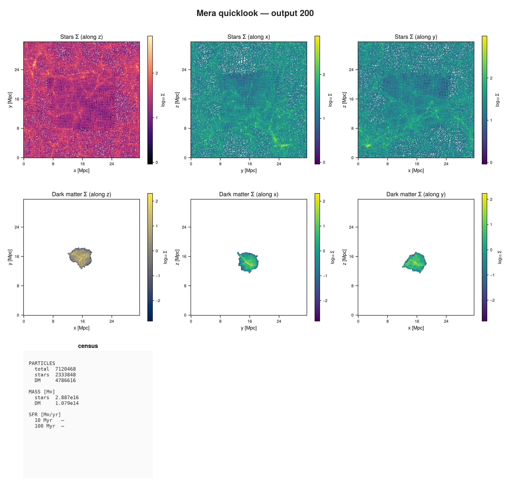
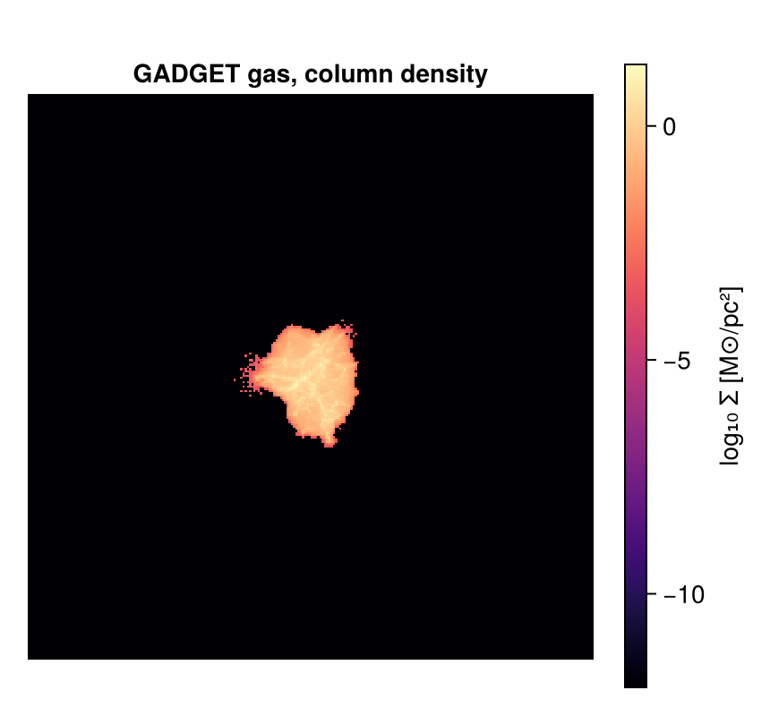

GADGET: First Inspection
This page is also an executable Jupyter notebook: open / download 44_gadget_First_Inspection.ipynb. The notebooks run end-to-end and double as part of Mera's test suite.
Every page so far has read gas on a grid. GADGET does not have one: the gas is particles, and so are the dark matter, the stars and the black holes. This page shows what changes, and what does not.
The run is a cosmological box at redshift 1.9 with about 12 million particles.
It is the GadgetDiskGalaxy sample from the yt project:
curl -O https://yt-project.org/data/GadgetDiskGalaxy.tar.gz
tar xzf GadgetDiskGalaxy.tar.gz1. What is in the file?
using Mera, CairoMakie
path = "/Volumes/FASTStorage/Simulations/Mera-Tests/GADGET/gadget_diskgalaxy/GadgetDiskGalaxy"
info = getinfo(200, path);*__ __ _______ ______ _______
| |_| | | _ | | _ |
| | ___| | || | |_| |
| | |___| |_||_| |
| | ___| __ | |
| ||_|| | |___| | | | _ |
|_| |_|_______|___| |_|__| |__|
Mera v2.0.0-DEV | Julia 1.12.7 | 8 threads
[Mera]: this snapshot records no unit attributes; using GADGET's defaults (1 kpc/h, 1e10 Msol/h, 1 km/s). Override with unit_length=, unit_density= or unit_velocity= if your run used others.
[Mera]: 2026-09-15T22:02:04.141
Code: GADGET
output: 200 time: 0.34483 redshift: 1.9
boxlen = 64000.0
particles: 4334546 gas, 4786616 halo/DM, 2333848 disk, 450921 stars, 1149 bndry/BH (total 11907080)
group catalogue: none found (halo membership via halo= unavailable)
-------------------------------------------------------
[Mera]: composition not recorded by this format; using X = 0.76, mu = 1.32 (RAMSES convention) for :nH and :T. Change with setcomposition!(info; X_frac=…, mu=…).A census of the whole snapshot in one call, before loading anything yourself:
ql = quicklook(200; path=path);[Mera]: quicklook output 200, reading particles: 2026-09-15T22:02:19.751
┌─ Mera quicklook ── output 200 (GADGET) ───────────────
│ box : 31530.0 kpc levels 1–1 (finest 1.576e7 pc)
│ grid : ndim 3 · ncpu 1 · nvarh 0
│ time : 3510.0 Myr z = 1.9
│ particles : 7120468 total — stars 2333848 · DM 4786616 · sinks 4
│ star mass : 2.887e16 M⊙ DM mass : 1.079e14 M⊙
│ current SFR: — (10 Myr) · — (100 Myr) M⊙/yr
└─ 11.99 s ──────────────────────────────────
[Mera]: quicklook output 200 finished: 2026-09-15T22:02:31.740quicklookplot(ql)
Two notices on load, and both are worth reading.
This snapshot records no unit attributes, so Mera falls back to GADGET's own documented defaults: 1 kpc/h, 10¹⁰ M⊙/h, 1 km/s. It also records no gas composition, so :nH and :T use the RAMSES convention. Neither is a guess Mera makes quietly; both are stated, and both can be overridden with keywords or setcomposition!.
The run is cosmological, so positions and densities are comoving. Mera folds the expansion factor and h into the unit system, so what you read back is physical.
info.aexp, 1/info.aexp - 1, iscosmological(info) # scale factor, redshift(0.3448279989668472, 1.8999965286929705, true)info.boxlen * info.scale.Mpc # physical box size31.5271356122775862. There is no gethydro here
Ask what this code offers, rather than assuming:
capabilities(info)4-element Vector{Symbol}:
:info
:particles
:groups
:logs:hydro is absent, and that is correct: GADGET has no grid. Gas lives in the particle file as PartType0, so it loads with getparticles. Calling gethydro would fail with a message saying exactly that, instead of returning something wrong.
:groups and :logs are there because SUBFIND catalogues and run-time logs can be read too.
3. Load the particles
A snapshot holds several particle families at once. families= reads only the ones you want, which matters when the file has 12 million rows.
gas = getparticles(info; families=[0]); # PartType0, the gas[Mera]: GADGET gas cells = 4334546, families 0 (x,y,z,vx,vy,vz,mass,id,family,rho,u,ne,sfr,nh,volume)gas.dataTable with 4334546 rows, 15 columns:
Columns:
# colname type
────────────────────
1 x Float64
2 y Float64
3 z Float64
4 vx Float64
5 vy Float64
6 vz Float64
7 mass Float64
8 id Int64
9 family Int32
10 rho Float64
11 u Float64
12 ne Float64
13 sfr Float64
14 nh Float64
15 volume Float64The table looks different from a grid one. There is no level, cx, cy, cz: a particle has no grid address. Instead :x, :y, :z are ordinary positions, and :mass is per particle.
After that the gas columns are familiar: density, internal energy, electron abundance, star formation rate. :volume is derived as mass over density, which is what lets Mera treat these as cells with an extent rather than as points.
using StatsBase
countmap(getvar(getparticles(info; verbose=false), :family)) # every family in the fileDict{Float64, Int64} with 5 entries:
0.0 => 4334546
4.0 => 450921
5.0 => 1149
2.0 => 2333848
1.0 => 4786616Family 0 is gas, 1 is dark matter, 2 the disk component, 4 stars and 5 black holes.
4. Physical quantities
msum(gas, :Msol) # gas mass1.9538209622766027e13extrema(getvar(gas, :rho, :nH)) # hydrogen number density, cm^-3(1.8817874399131718e-7, 1901.5789627423692)From 10⁻⁷ to about 10³ per cubic centimetre: void gas at one end, star-forming gas at the other, which is the range a cosmological box should span.
stars = getparticles(info; families=[4]);
msum(stars, :Msol)[Mera]: GADGET particles = 450921, families 4 (x,y,z,vx,vy,vz,mass,id,family)1.7674862254989448e125. A projection
The same call as on every grid code. For particles Mera deposits each one, and because the gas carries :volume it can be smeared over its own size rather than dropped on a single pixel.
proj = projection(gas, :sd, :Msol_pc2, direction=:z, res=256);
size(proj.maps[:sd])[Mera]: 2026-09-15T22:02:51.238
domain:
xmin::xmax: 0.0 :: 1.0 ==> 0.0 [Mpc] :: 31.527 [Mpc]
ymin::ymax: 0.0 :: 1.0 ==> 0.0 [Mpc] :: 31.527 [Mpc]
zmin::zmax: 0.0 :: 1.0 ==> 0.0 [Mpc] :: 31.527 [Mpc]
Effective resolution: 256^2
Pixel size: 123.153 [kpc]
Simulation min.: 15.764 [Mpc](256, 256)fig = Figure(size=(430, 400))
ax = Axis(fig[1,1]; title="GADGET gas, column density", aspect=DataAspect())
hidedecorations!(ax)
hm = heatmap!(ax, log10.(proj.maps[:sd]' .+ 1e-12); colormap=:magma)
Colorbar(fig[1,2], hm, label="log₁₀ Σ [M⊙/pc²]")
fig
Where to go next
The data model changed, the calls did not. getparticles instead of gethydro, positions instead of grid addresses, and everything after that is the same: getvar, projection, msum, sub-regions, profiles and movies.
For weighting choices when projecting particle data, and the difference between :mass, :sph and :voronoi, see the GADGET and AREPO reader pages.